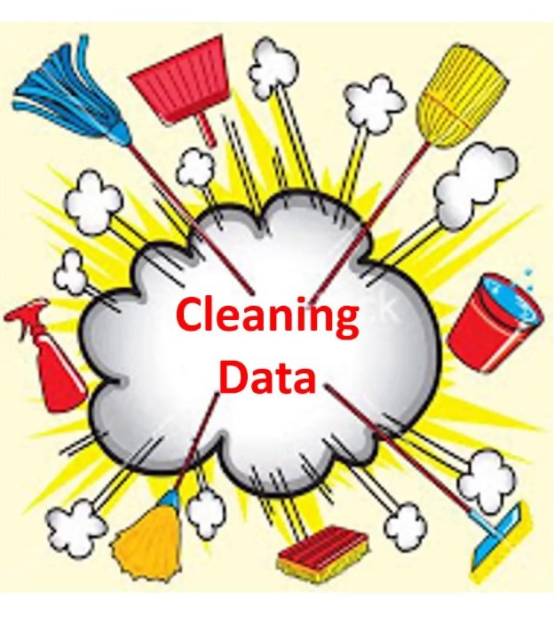

This is a case study project that I did in the Google Data Analytics Course. In this project, I recommended
business strategy to improve business for a company called Cyclistic by analyzing their client's data.

In this project, I explored housing data of Rockland, Ontario to recommend the type of house a family of four can afford with a budget of $350 000.
In this project, I used time series models to help an environmental management agency to monitor the water levels of Lake Erie. Moreover, I did forecasting of the
water level of the lake to ensure it stay within the normal range.

In this project, I used SQL to remove duplicates, standardize variable formats and increased the usability of data by using various other methods of
data cleaning.

In this project, I used SQL to explore the global data of Covid deaths and vaccination.

Various Data Visualization Dashboards that I have created using Tableau

Database design using MySQL